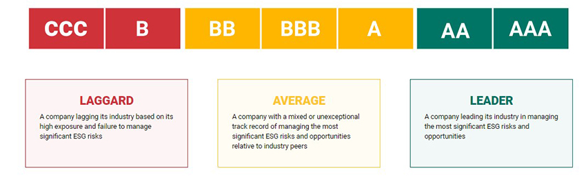
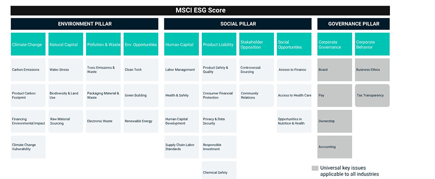
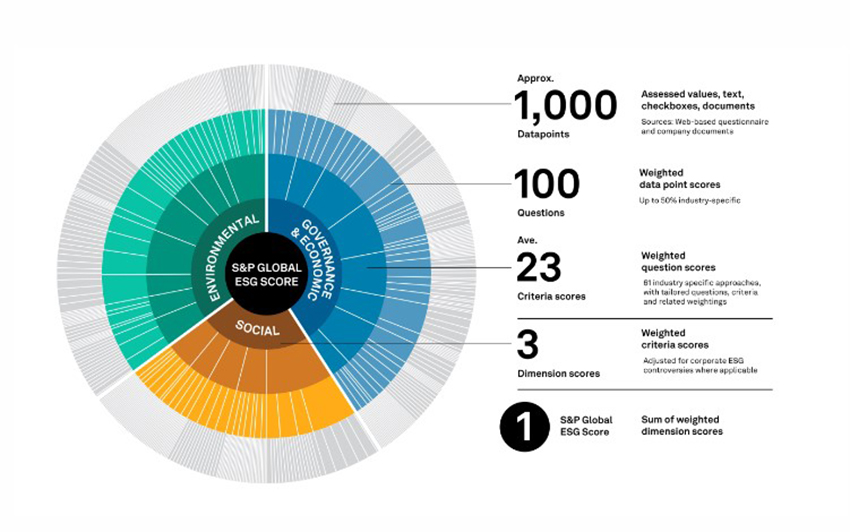
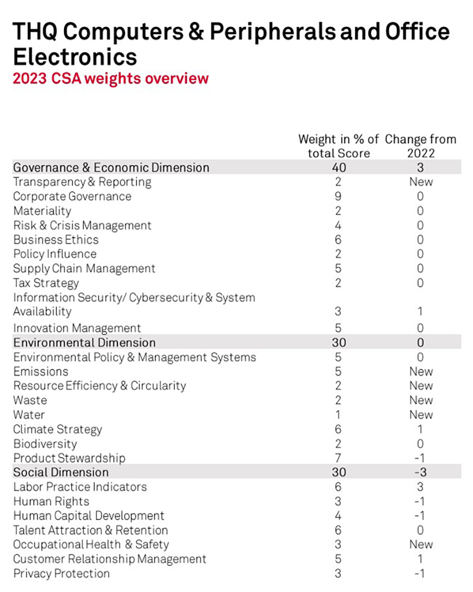
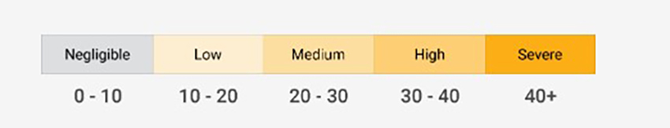
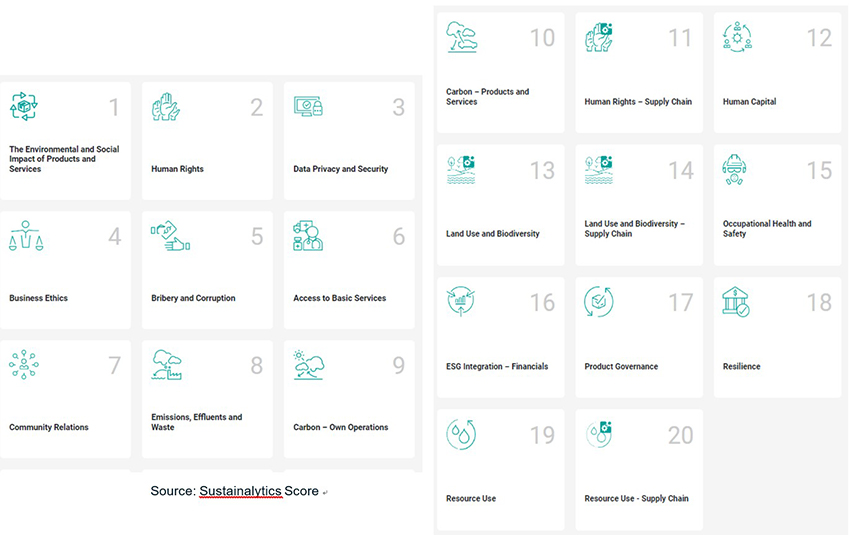

ESG是一個評估企業對「環境、社會責任、公司治理」的風險指標之一。2021年世界各國在聯合國氣候變化大會上簽訂格拉斯氣候協定後，正式開啟ESG浪潮。企業之所以開始重視ESG，除了政府推動相關政策外、氣候變遷及疫情對全球社會經濟造成影響，同時為提升國際競爭力並獲得投資人信賴，落實E、S、G成為企業重要的永續議題。
以投資人角度看ESG
非ESG公司主要以利益為考量，重視公司獲利及財務數字績效為目標；相比高ESG公司在考量獲利外，同時重視「人本」。因此，投資人除了評估公司獲利外，更可以透過公司在公開接露其環境、社會及治理方面了解其潛在風險。雖然高ESG不等於高獲利或高成長，但對投資人而言，選擇高ESG的公司相對能降低投資風險並且因具備永續經營的理念及行動，在長期的營運與獲利上將會優於同產業平均的表現，甚至越來越多企業將ESG表現列為合作的重要考量。
ESG評分機構及標準
由於ESG並沒有一個通用的評分準則，國際上各家機構評分標準不同，大致皆是由核心三大面向作為基準做評核，因此投資者可以參考各大ESG機構分數後再自行整理出最合理的ESG公司。以下將介紹三大有名的ESG評分機構：
| MSCI 明晟永續指數 |
DJSI（S&P Global）CSA 道瓊永續發展指數 |
Sustainalytics | |
| 目的 | 重視財務相關的ESG評鑑系統 | 檢視企業營運面的風險與機會 | 評量企業ESG風險 |
| 評分 | 1. 從企業公開資訊彙總公司治理與行為+33個關鍵議題最終評分 2. 七級評分(高->低) 領先：AAA,AA 平均：A,BBB 落後：BB,B,C 總分： 公司治理x關鍵議題x加權平均議題x最終行業調整 |
1. 從企業公開資訊彙總ESG績效及行為+約100題題組問券 2. 0~100分 (低->高) 總分： 問題得分x指標權重x問題權重 |
1. 20個議題 2. 五級風險評估之評分（越低越好） 0~10分：幾乎無風險 10~20分：低風險 20~30分：中度風險 30~40分：高風險 40分以上：嚴重風險 總分： 公司ESG曝險-公司已控制風險 |
| 優點 | 1. 全球大企業都使用的標準 2. 提供連續五年分數 3. 可產出細部報告，如預計減碳年份，其他ESG目標 |
1. 全球ESG指標 2. 入選門檻高，提升企業國際形象及能見度，帶動股價 *CSA評估採用非主動申請的方式，需受邀才能參加，大型企業為主 |
1. 結合Yahoo Finance方便查詢 2. 產出細部報告，如同業與全球比較 |
| 缺點 | 1. 無具體數據，僅提供排名 2. 無法依照各個項目的分數去改善 |
1. 評分標準嚴格，中小企業難達標 2. 題目指標多元，且每年更新，需要高成本去提高或維持分數 |
|
| 網站 | https://www.msci.com/our-solutions/esg-investing/esg-ratings-climate-search-tool/ | https：//www.spglobal.com/esg/ solutions/data-intelligence-esg-scores |
https：//www.sustainalytics.com/esg-ratings |
| 仁寶 | A | 71 | 18.59 |
明晟永續指數MSCI
MSCI ESG指數，是由摩根士丹利公司(簡稱大摩)所發行，MSCI ESG Research 創建，1999年開始以 ESG 指標作為股票的評級，為全球三大ESG評級機構之一。MSCI將3大評分標準10個主題與35個細目，再根據產業領域給予每個細目不同的權重，最後計算分數得出ESG評級。評級由高至低，分別代表「領先」、「平均」和「落後」。
|  |
|  |
道瓊永續發展指數（DJSI）
永續發展指數(DJSI)是全球首創永續發展指數，從美國道瓊工業指數中延伸出來的永續指數，被譽為最有影響力及權威性之企業永續評鑑系統。最早於1999年推出，以S&P Global發起企業永續評鑑法（Corporate Sustainability Assessment, CSA）從經濟、社會及環境調查，目前DJSI的ESG評分準確來說是S&P Global的CSA分數。CSA每年從道瓊工業指數涵蓋的全球企業為基礎，並在62個產業中精選永續表現前10%優秀企業成為DJSI成分股。另外，有些時候因為行業名額限制，導致高分卻沒入選DJSI，或僅一家公司入選該行業別。因此在看待DJSI時需持續性觀察或是參考CSA分數。
|  |
|  |
Sustainalytic
Sustainalytics為歐洲擁有30年ESG評分的權威機構，也是目前全球ESG分數涵蓋最多企業的機構，評級方面以關鍵ESG議題、公司治理及企業會遭遇的獨特議題等進行評分。遭遇的風險分為「可控制」、「不可控制」；「可控制」再進行下一步分析「已控制」與「未控制」。ESG評級從無風險、低風險、中度風險、高風險和嚴重風險，分數愈低代表ESG評級愈好。
|  |
|  |
參考資料 :
https：//www.reccessary.com/zh-tw/reccpedia/carbon-organization/dow-jones-sustainability-indices